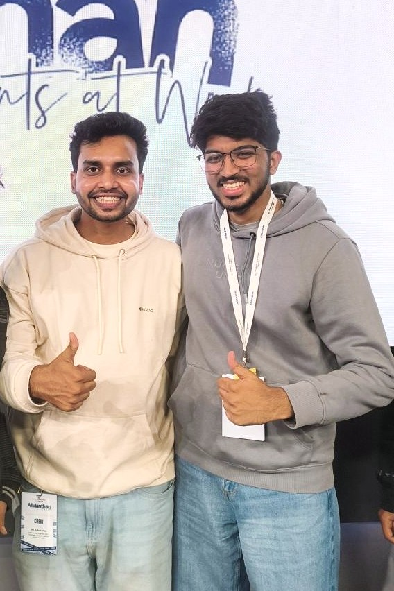

Gurugram
Gurugram Some events leave you with notes. Others leave you with ideas that continue to grow long after the event ends.
AI Manthan 2025, hosted by GDG Cloud New Delhi at the Google office in Gurugram, was one of those experiences for me. From insightful technical sessions to discussions around design, product thinking, and the future of AI systems, the event offered a complete learning experience that went beyond presentations and slides.
Walking into the Google office itself was exciting, but what truly made the day memorable was the quality of the conversations, the speakers, and the community. It was a gathering of developers, designers, AI enthusiasts, and students who shared the same curiosity about where technology is heading.
Arriving at Google Gurugram
Stepping into the Google office instantly set the tone for the day. The energy was incredible, with attendees networking, exchanging ideas, and eagerly waiting for the sessions to begin.
Seeing hundreds of passionate people in one place, all excited to learn and discuss artificial intelligence, reminded me why community events like these are so valuable. They bring together people from different backgrounds with one common goal—to learn, build, and grow.

A Well-Balanced Technical Experience
One thing I genuinely appreciated about AI Manthan 2025 was how balanced the event felt.
Instead of focusing on only one aspect of artificial intelligence, the sessions covered multiple perspectives:
- Large Language Models
- Agentic AI Systems
- Product Thinking
- Design Principles
- AI Applications
- Developer Tools
- Practical Workshops
- Industry Discussions
This made the event valuable regardless of whether you were interested in software engineering, AI research, design, or product development.
Each session built upon a different piece of the AI ecosystem, making the entire experience feel thoughtfully planned rather than a collection of unrelated talks.

Understanding LLMs and Agent-Based Systems
The discussion explored Large Language Models and agent-based system design—not simply explaining how modern AI models work, but focusing on how intelligent systems should actually be designed.
Rather than treating AI as just another API, the session emphasized building structured systems where reasoning, planning, and execution work together.
A few important ideas that resonated with me included:
- Thinking in terms of workflows instead of isolated prompts.
- Designing agents that can make decisions and complete tasks.
- Breaking complex problems into smaller, manageable steps.
- Building AI systems that are reliable, maintainable, and scalable.
The session reinforced an important lesson:
Great AI products are not built only with powerful models—they are built with thoughtful system design.
As someone interested in building AI-powered applications, this perspective was incredibly valuable.

Design That Speaks Without Speaking
The focus shifted from algorithms to something equally important—design.
One statement that stayed with me throughout the day was the idea that:
Good design guides users naturally instead of demanding their attention.
The session highlighted how thoughtful interfaces influence user behavior, simplify interactions, and create trust.
It served as a reminder that successful products are not only technically strong but also intuitive and enjoyable to use.
As developers, it's easy to focus solely on functionality, but this session demonstrated why design deserves equal attention when building products people genuinely love.

Exploring the Future with Ravian AI
One of the most interesting parts of the event was the introduction to Ravian AI.
Instead of viewing AI as a tool that simply generates responses, the session explored a broader vision where AI systems can:
- Observe
- Plan
- Decide
- Execute
- Adapt
The discussion shifted the focus from conversational AI to intelligent digital systems capable of acting within software environments.
This perspective opened up exciting possibilities for how AI can be integrated into future applications—not merely answering questions but actively assisting users in accomplishing complex tasks.
It was fascinating to see how rapidly this space is evolving.

Industry Insights Through the Panel Discussion
The panel discussion provided a refreshing industry perspective.
Instead of theoretical concepts, the conversation centered around practical challenges faced while building products in today's AI landscape.
Topics included:
- Emerging AI trends
- Product development strategies
- Current industry practices
- Career growth
- Real-world expectations
Listening to professionals openly discuss both opportunities and challenges made the session particularly valuable.
It reminded me that continuous learning and adaptability remain some of the most important skills in technology.

Chrome DevTools Workshop
The day concluded with an engaging Chrome DevTools workshop.
Although Chrome DevTools is something many developers use regularly, the workshop introduced several techniques that can significantly improve debugging and development workflows.
The session was:
- Practical
- Beginner-friendly
- Interactive
- Easy to follow
It served as a great reminder that mastering the tools we already have can often make us far more productive than constantly searching for new ones.

Learning Beyond the Stage
While the sessions were excellent, one of the best parts of the event happened outside the auditorium.
Between talks and during breaks, I had the opportunity to interact with fellow developers, students, designers, and AI enthusiasts.
These conversations were filled with discussions about:
- Side projects
- Open source
- Career paths
- AI tools
- Startups
- Future collaborations
Networking at community events isn't simply about exchanging LinkedIn profiles—it's about sharing experiences, learning from others, and discovering perspectives you might never encounter otherwise.
Those conversations were just as valuable as the sessions themselves.

Appreciation for the Organizers
Events like AI Manthan require an incredible amount of planning behind the scenes.
A heartfelt thank you to GDG Cloud New Delhi for organizing such a well-structured event.
Special appreciation goes to Abdullah Shahid and Mohd Kafeel Khan for ensuring everything—from registrations and scheduling to audience engagement—ran smoothly throughout the day.
Their efforts created an environment where learning felt effortless and enjoyable.

My Key Takeaways
Looking back, a few lessons stand out the most:
- AI systems should be designed thoughtfully, not just powered by large models.
- Great products combine engineering with exceptional design.
- Agentic AI represents an exciting direction for the future.
- Developer productivity often comes from mastering existing tools.
- Community events remain one of the best places to learn, network, and grow.
Every session contributed something different, making the overall experience incredibly well-rounded.
Final Thoughts
AI Manthan 2025 wasn't just another technology conference—it was a day filled with learning, inspiration, and meaningful conversations.
I left the Google office with pages of notes, several new ideas for future projects, and an even stronger motivation to continue exploring artificial intelligence and modern software development.
A huge thank you once again to GDG Cloud New Delhi, all the speakers, volunteers, and organizers for creating such an impactful experience.
I'm looking forward to attending more community events like this, continuing to learn from experts, and connecting with people who share the same passion for technology.
Until the next event, happy building!